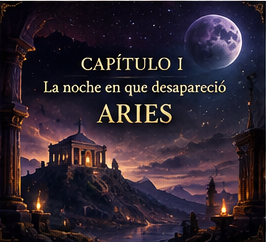
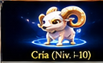
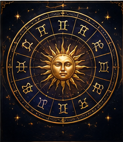

1NIVEL
0VÍNCULO
0/1CAPÍTULOS
Guardián activo: Hamal

CAMPAÑA
El primer sello
Investigá la desaparición de Aries. Tus decisiones revelan pistas.

PROGRESIÓN
Los doce Guardianes
Elegí, entrená y evolucioná a tu compañero astral.

RITUAL DIARIO
El Presagio
Horóscopo, decisiones, recompensa diaria y tarjeta para compartir.